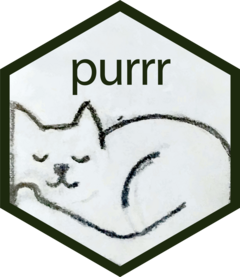

── Attaching core tidyverse packages ──────────────────────── tidyverse 2.0.0 ──
✔ dplyr 1.1.4 ✔ readr 2.1.5
✔ forcats 1.0.0 ✔ stringr 1.5.1
✔ ggplot2 3.5.1 ✔ tibble 3.2.1
✔ lubridate 1.9.3 ✔ tidyr 1.3.1
✔ purrr 1.0.2
── Conflicts ────────────────────────────────────────── tidyverse_conflicts() ──
✖ dplyr::filter() masks stats::filter()
✖ dplyr::lag() masks stats::lag()
ℹ Use the conflicted package (<http://conflicted.r-lib.org/>) to force all conflicts to become errorsProgramming in R
Gabriel Mateus Bernardo Harrington ![]()
Programming
The implementation of logic to facilitate specified computing operations and functionality
What we will cover
- Conditional Execution
- Defining Function Arguments
- Explicit Constraints
- Dot-dot-dot (…)
- Pipes
- Iterations with purr
- While loops
- Other loops – purrr functions
- The map family
- Shortcuts
- Multiple arguments
- walk
Package load and conflicts
- We’ll load our packages early as is good practise!
- As an aide, you may notice a verbose message when loading the tidyverse mentioning conflicts
- If we load the
conflictedpackage it will force an error if you use a function that has multiple sources (filteris commonly guilty of this!)
Package load and conflicts
Error:
! [conflicted] filter found in 2 packages.
Either pick the one you want with `::`:
• dplyr::filter
• stats::filter
Or declare a preference with `conflicts_prefer()`:
• `conflicts_prefer(dplyr::filter)`
• `conflicts_prefer(stats::filter)`# We can explicitly state which filter we prefer just once
conflicts_prefer(dplyr::filter)
mtcars[1:3,] |>
filter(gear == 4) mpg cyl disp hp drat wt qsec vs am gear carb
Mazda RX4 21.0 6 160 110 3.90 2.620 16.46 0 1 4 4
Mazda RX4 Wag 21.0 6 160 110 3.90 2.875 17.02 0 1 4 4
Datsun 710 22.8 4 108 93 3.85 2.320 18.61 1 1 4 1Conditional Execution
- In R, the conditional execution of statements are performed within
if()and{}blocks of code. - To start with, code is easier to understand (by you and everyone!) if you separate the lines and use indentations. Not like this:
- Note that RStudio has a shortcut for auto-formatting highlighted code: ctrl+shift+A
Defining Function Arguments
- There are two types of arguments: Mandatory and Optional
- The mandatory arguments are always at the beginning of the list of arguments, followed by optional arguments and their default values.
- Example:
- What do you think will happen if you try
pow(3)andpow(3,3)in the console? Try it!
Defining Function Arguments
- There are two ways of passing the values to a function: by order and by name.
- Check the description of
mean()by typing?mean - Passing unnamed arguments by order is bad programming because it means you have to remember the command and each of its arguments (try doing that for 1000 functions!), and it makes your code much less clear!
- Passing them by name means you can change the order
- Best practice is to define include the first argument (can be without name) of the function as the input data to be processed:
Defining Function Arguments
- Adding restrictions to the function means they can be more efficient
- For example:
- The stop function is executed when the modulus (remainder from division) is zero. A good error checking mechanism (even gives a message!)
Defining Function Arguments
- The previous code can be simplified by using:
stopifnot()
- And we can add multiple expressions in one go
Dot-Dot-Dot (…)
- An ellipsis means that the function can take any number of named or unnamed arguments (run
?print()for an example) - For example: We can use … to pass those additional arguments on to another function. Essentially, placeholders for other arguments.
Dot-Dot-Dot (…)
- By adding numbers at the end, it is possible to refer to elements of … by position (what position the generic arguments will sit in).
List of 2
$ first: num 1
$ third: num 3- More useful is
list(...), which evaluates the arguments and stores them in a list. Very useful when working with data!
Pipes |>
- There are two types of pipeable functions: transformations and side-effects.
- Transformations are where an object is passed to the function’s first argument and a modified object is returned.
- With side-effects, the passed object is not transformed. Instead, the function performs a function on that object, such as drawing a plot or saving a file.
Pipes |>
- If we use our newly created
print_missings()function, theinvisible()command means that the input data frame will not get printed out but we can still use it in a pipe.
Iterations with purrr

- We want to keep code efficient and less repetitive: performing the same thing on multiple inputs, repeating the operation on multiple columns, or on different datasets.
- To help achieve this, iterations are used. For example:
Iterations with purrr
- This can be simplified with a for loop
- A breif note, it’s generally better to vectorise your R code as it’s faster and often more succinct code, see here and here for more details
- However it is said that premature optimization is the root of all evil, so don’t stress to much if you’re analysing smaller datasets
- If you’re writing a pipeline that’ll be rerun many times by lots of people, then optimisation is more important
Other loops - purr functions
purrris a package that helps to enhance R’s functional programming toolkitpurrrfunctions help to break common challenges in list manipulation into independent pieces.- Base R has family of functions known as “apply family”, that eliminates the need for many common for loops,
apply(),lapply(),tapply() purrrhas a family of functions called the “map family”.- Each function takes a vector as input, applies a function to each piece, and then returns a new vector that has the same length as the input.
The map family
- Essentially, map() is the tidyverse equivalent of the base R apply family of functions.
- The basic syntax is
map(.x, .f, ...)where:.xis a list, vector or dataframe.fis a functionmap()will then apply.fto each element of.xin turn.
The map family
- We can use the
mapfunction to compute the mean and standard deviation of previous dataset.
The map family
- We can even use a string or a position (integer) to extract components from the input data - very useful when working with big datasets!
map_ functions
- One property of the
map()function is that it will always return a list. - To change the output data type, we can use multiple versions of
map_*():map_lgl()returns a logical.map_int()returns a integer vector.map_dbl()returns a double vector.map_chr()returns a character vector.map_df()returns a data frame.
Shortcuts
- Fit a linear model to each group in a dataset. This example splits up the mtcars dataset into three pieces and fits the linear model to each piece.
models <- mtcars %>%
# note this is an example where the native R pipe won't work!
split(.$cyl) |>
map(function(df) {
lm(mpg ~ wt, data = df)
})
# Using tidyverse annonymous function syntax
models2 <- mtcars %>%
split(.$cyl) |>
map( ~ lm(mpg ~ wt, data = .))
# And here is the the native R equivalent
models3 <- mtcars %>%
split(.$cyl) |>
map(\(df) lm(mpg ~ wt, data = df))Shortcuts
- The
.used in the second example is a placeholder for the dataset we’ve piped in (mtcars) so we can access parts of it (via$) - Note that the placeholder for the native R pipe (
|>) is a_, but it doesn’t have the same functionality as themagritterpipe! See here for more info on differences - Example: we want to get the \(R^2\) from our models
Multiple Arguments
purrrgives us the option to include more than one input in parallel withmap2()andpmap().- Imagine we would like to simulate some random normal distributions with different means, and each vary, we could do:
Multiple Arguments
- The code can be understood by the following figure:

Multiple Arguments
- There is no map3 or map4, so what if we want more than 2 arguments?
purrrhas the functionpmap()for an arbitrary number of args.
List of 3
$ : num 4.88
$ : num [1:3] 18.42 9.56 18.31
$ : num [1:5] -13.2 -2.98 -2.05 -31.84 -11.14- We can go even further by increasing the complexity of the problem using the
exec()function.
funcs <- c("runif", "rnorm", "rpois")
params <- list(list(min = -1, max = 1), list(sd = 5), list(lambda = 10))
map2(funcs, params, \(fn, args) exec(fn, !!!args, n = 5)) |>
str()List of 3
$ : num [1:5] 0.902 -0.755 0.201 0.374 0.181
$ : num [1:5] 1.59 1.68 -11.73 1.13 -7.38
$ : int [1:5] 13 4 13 8 6walk
walk()is an alternative to map that we use we call a function for its side effects, disregarding its return value.
- Really useful when outputting datasets in lists! (such as microarray data)
- Similar to
map(), purrr also haswalk2()andpwalk()
walk2
df0 <- tibble(x = 1:3, y = rnorm(3))
df1 <- tibble(x = 1:3, y = rnorm(3))
df2 <- tibble(x = 1:3, y = rnorm(3))
animalFrames <- tibble(animals = c('sheep', 'cow', 'horse'),
frames =
list(df0, df1, df2))
# Save a list of dataframes
animalFrames %>%
walk2(
.x = .$animals,
.y = .$frames,
.f = ~ write_csv(.y, str_c("test_", .x, ".csv"))
)pwalk
pmap()andpwalk()allow you to provide any number of arguments in a list.
# Let's set-up a dataframe and function to use with pwalk
ds_mt <-
mtcars |>
rownames_to_column("model") |>
mutate(am = factor(am, labels = c("auto", "manual"))) |>
select(model, mpg, wt, cyl, am) |>
sample_n(3)
foo <- function(model, am, mpg) {
print(paste("The", model, "has a", am, "transmission and gets", mpg, "mpgs."))
}
# Now we can use pwalk
ds_mt |>
select(model, am, mpg) |>
pwalk(.l = _, .f = foo)[1] "The Mazda RX4 Wag has a manual transmission and gets 21 mpgs."
[1] "The Volvo 142E has a manual transmission and gets 21.4 mpgs."
[1] "The Ferrari Dino has a manual transmission and gets 19.7 mpgs."While loops
- You’re unlikely to every use them in a data analysis context (I never have!), but they evaluate their body code until a condition is met
- Example: see how many times we need to flip a coin to get three heads in a row:
Number of flips to get 3 heads in a row: 17- Beware that while loops can crash if the condition being evaluated never becomes false!
Workshop time!

MET581 - Programming in R